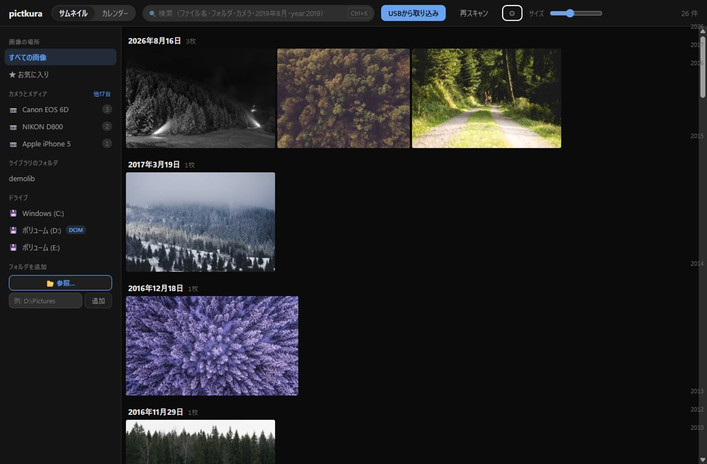
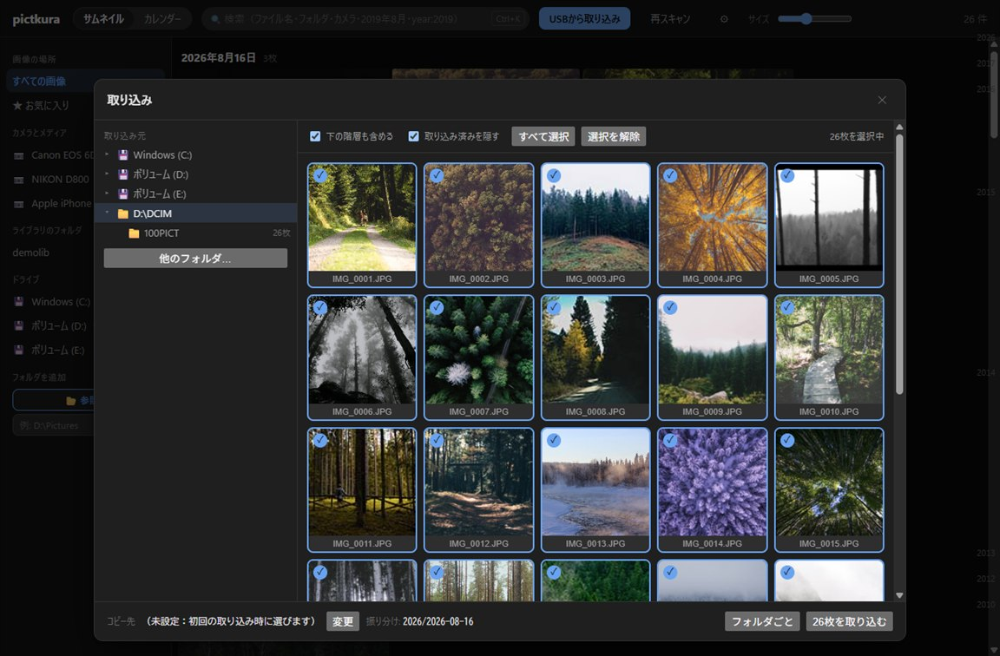
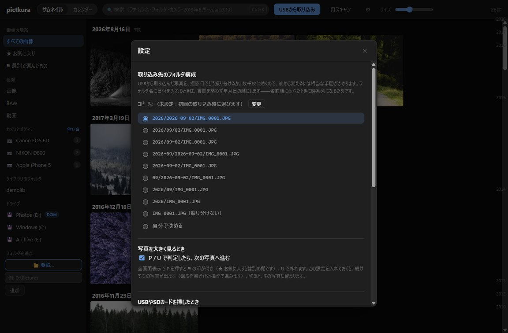
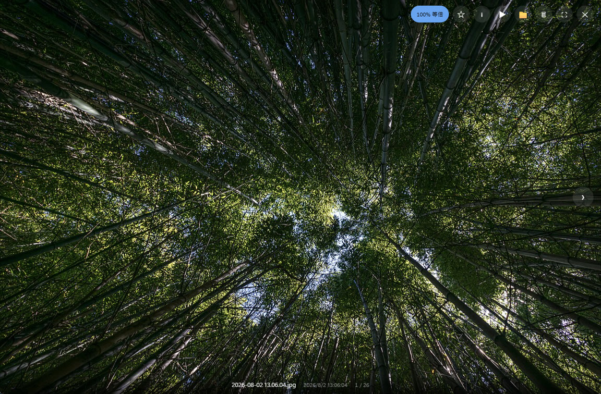

Windows 10 / 11 と macOS 11 以降 — v0.2.6
数万枚を、
待たずに。
やることは、カードから取り込むことと、ためこんだ写真を並べて見ること。写真を現像する場所ではなく、貯めておくための道具です。この二つだけに絞って Rust で書き、作らなかった分は、そのまま速さに回っています。

日付ごとに並んだ一覧。右端の縦棒をつまむと、年をまたいで一気に飛べます。
0
起動のたびにフォルダを端から見て回る回数。Windows が持っている変更の記録を読むので、前回から変わった分だけで済みます
17ms
24MP の CR3（RAW データ）から原寸の絵を取り出すまで（横位置・実測）。JPEG をそのまま渡すのが 6ms なので、RAW でもほぼ変わりません。現像せず、カメラが埋め込んだ表示用の JPEG を使うからです
2.5×
一覧のサムネイルを作る速さ。SIMD で縮め、JPEG は小さくしながら展開しています
FTS5
検索はいつも索引を引くだけ。日本語は 2 文字ずつに割ってあるので、ことばの途中でも当たります
測った機械と、ここに載せきれなかった数字（HEIC は 1 枚 0.6〜1 秒かかります）は、アプリ仕様の「実測値」にまとめてあります。

写真は、撮っている時間より、
撮ったあとに眺めている時間のほうが長い。
速いのは、削ったからです
Rust + Tauri v2
ブラウザを積まない
画面は OS が持っている WebView に任せ、処理はネイティブで走ります。Electron のように実行環境を丸ごと抱えないので、配布物も起動も軽いままです。
media://
base64 にしない
画像は専用のプロトコルでそのまま流します。いったん文字列に直して 1.33 倍に膨らませる、あの工程がありません。
Virtual scroll
画面の外は作らない
見えている分だけを描きます。何万枚あっても、画面に載る要素の数は変わりません。
No layout shift
写真が届く前に、場所が決まっている
幅と高さをデータベースに持っているので、読み込みの途中でタイルが飛び跳ねません。
Scan & serve
調べている最中も、一覧は動く
フォルダを調べる処理は、データベースの錠の外側で走ります。追加した直後から、見つかったところが順に並びます。
No hashing
中身を読み直さない
変わったかどうかは、大きさと更新時刻だけで見ます。写真の中身を毎回ハッシュに掛けたりはしません。
カードを挿すところから


取り込み先は好きなフォルダ。撮影日ごとの構成は 9 つの雛形から選ぶか、{year}/{month} のように自分で書けます。書いたそばから、できあがるフォルダ名が出ます。
隣にあるファイルも一緒に運ぶ
現像ソフトが書いた .xmp や .dop は、写真と同じ名前のまま付いていきます。
「済」の判定がずれない
取り込み済みを隠す判定は、取り込み本体と同じ経路を通ります。見えているものと実際が食い違いません。
コピーのあとに、大きさを比べる
1 枚ごとに検証します。進捗・残り時間・いま入れている写真が出ます。
選ぶための、二つの棚

P連写から 1 枚だけ抜く
⚑ は ★ お気に入りとは別の棚です。選別の残りでお気に入りが埋まりません。
Xボツは、その場では消えない
閉じるときに対象を確認してから、まとめてごみ箱へ。削除は必ずごみ箱を通ります。
戻ってきたい写真に
検索窓には ★ や camera:α7、2019-08 をそのまま書けます。
RAW は、現像しません
普段はそのまま見る。でも、大切な 1 枚を救いたくなった日のために、RAW は残しておく。pictkura は RAW を現像しません。カメラが背面の液晶に出すために埋めておいた JPEG を、そのまま取り出して使います。デモザイクを回さない分速く、色はカメラが出したまま。16 メーカー 28 個の実ファイルで確かめました。
写真
jpg png webp avif
heic heif hif tif
bmp gif svg
AVIF のデコーダは同梱しています。HEIC の画素は OS の部品に任せます
RAW
cr2 cr3 nef arw
raf orf rw2 dng
pef srw 3fr x3f …
表示用 JPEG を取り出せると確かめた拡張子は 23。Apple ProRAW（DNG）も含みます
動画
mp4 m4v mov webm
avi mts m2ts mkv
3gp wmv mpg mpeg
長さと大きさは mp4・m4v・mov・3gp のヘッダから読みます。中身は 1 画素も展開しません
外に出るのは、1 本だけ
pictkura が自分から通信するのは「新しいバージョンがあるか」の確認だけです。送るのはバージョン番号のみ。写真も、ファイル名も、フォルダの場所も出ていきません。設定で切れば、通信は 1 本も残りません。
アカウントは要りません
登録も、ログインも、期限もありません
クラウドから先回りして落とさない
OneDrive の「オンラインのみ」も、実際にその写真を見たときだけ取得します
写真は元の場所のまま
独自の保管庫に取り込み直したりはしません
中を見られます
ソースは全部公開・MIT ライセンス
できないことも、先に書きます
全部入りの写真ソフトを目指していません。写真を仕上げる工房ではなく、貯めて見返すための道具だからです。
mp4 と mov ですDownload — v0.2.6
登録も、支払いも要りません
Windows 10/11 (x64)
macOS 11+ (Apple Silicon)
Windows インストーラ 推奨
管理者権限は不要です。自分のユーザーにだけ入ります。
pictkura_0.2.6_x64-setup.exe 7.6 MB
Windows 持ち歩き版
展開して pictkura.exe を起動するだけ。インストールしません。
pictkura_0.2.6_x64-portable.zip 10.1 MB
macOS
Apple Silicon 向け。初回だけ Gatekeeper の手順が要ります。
pictkura_0.2.6_arm64.zip 9.4 MB
最新バージョンの情報を取得できませんでした。上の 3 つは v0.2.6 のファイルで、これが最新とは限りません。ダウンロードのページか GitHub のリリースで確かめてください。
署名の証明書を持っていないので、Windows でも macOS でも初回に警告が出ます。 この警告は「発行元を確認できなかった」という意味で、中身を調べた結果ではありません。どの画面で何を押せばいいのかは、インストールと初回起動の手引きに画面ごとに記載しています。確かめるための材料は配布物の作られ方に並べました。